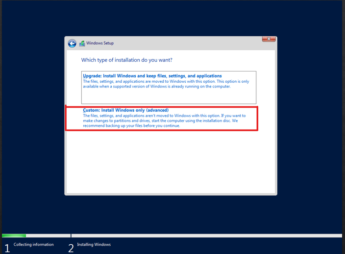

1.0
Instalacja Systemu
Na początku ustawiamy opcję języka oraz klawiatury u nas będzie to:
Język PolskiPo ustawieniu naszego języka i języka klawiatury klikamy "Dalej".I przechodzimy do punktu drugiego.
2.0
Instalacja Systemu

Następnie klikamy:
"Zainstaluj teraz"Po kontynuacji instalcji przechodzimy do punktu trzeciego do dalszej instalacji systemu win serwer 2019.
3.0
Instalacja Systemu
Następnie wybieramy rodzaj systemu i typ interfejsu u nas będzie to:
Wesja DesktopWersja desktop dodaje nam nakładkę graficzną dzięki czemu mamy podobny wygląd jak normalny system windows na naszych komputerach.Następnie przechodzimy do punktu 4.
4.0
Instalacja Systemu
Aby zainstalowac pakiet wystarczy uzyc
sudo apt install pakietInstalacja pakietow pomaga w ich uzytkowniu mozna wtedy zaczac pierwsze kroki Instalacja pakietow pomaga w ich uzytkowniu mozna wtedy zaczac pierwsze krokiInstalacja pakietow pomaga w ich uzytkowniu mozna wtedy zaczac pierwsze kroki
5.0
Instalacja Systemu

Następnie akceptujemy:
Regulamin/licencjePo zaznaczeniu opcji klikamy "Dalej" i przechodzimy do punktu szóstego.
6.0
Instalacja Systemu
Następnie wybieramy typ instalacji u nas będzie to:
Niestandardowa instalacjaPo kliknięciu przechodzimy do punktu 7.0
7.0
Instalacja Systemu
W kolejnym kroku wykonujemy podział naszego dysku na:
PartycjeKlikamy dalej i przechodzimy do punktu 8.0
8.0
Instalacja Systemu
Obecnie rozpoczyna się instalacja systemu:
Windows Serwer 2019Zostaje teraz poczekać na zakończenie instalacji i przejście do punktu 9.0
9.0
Instalacja Systemu
Gdy zainstalował się windows serwer i po ponownym uruchomieniu pc/maszyny wirtualnej uzupełniamy dane:
Login/PasswordPo uzupełnieniu klikamy dalej i przechodzimy do punktu 10.0
10.0